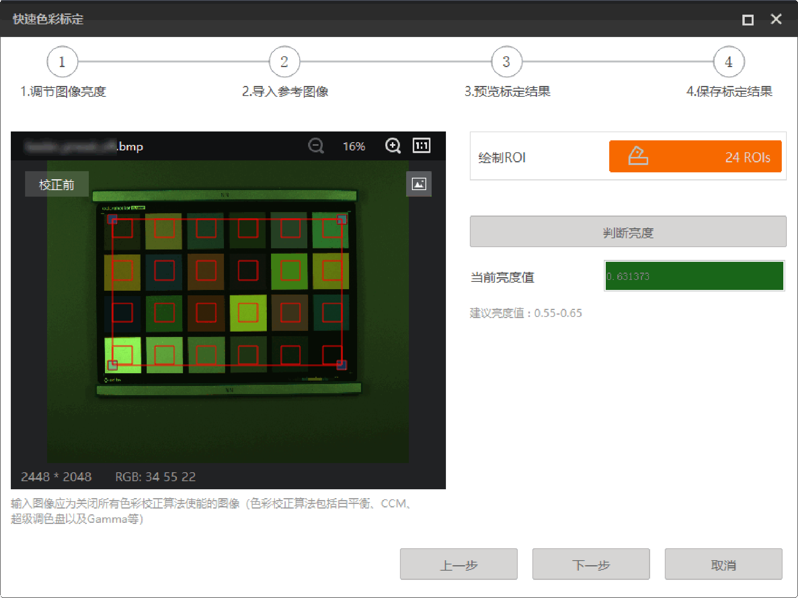
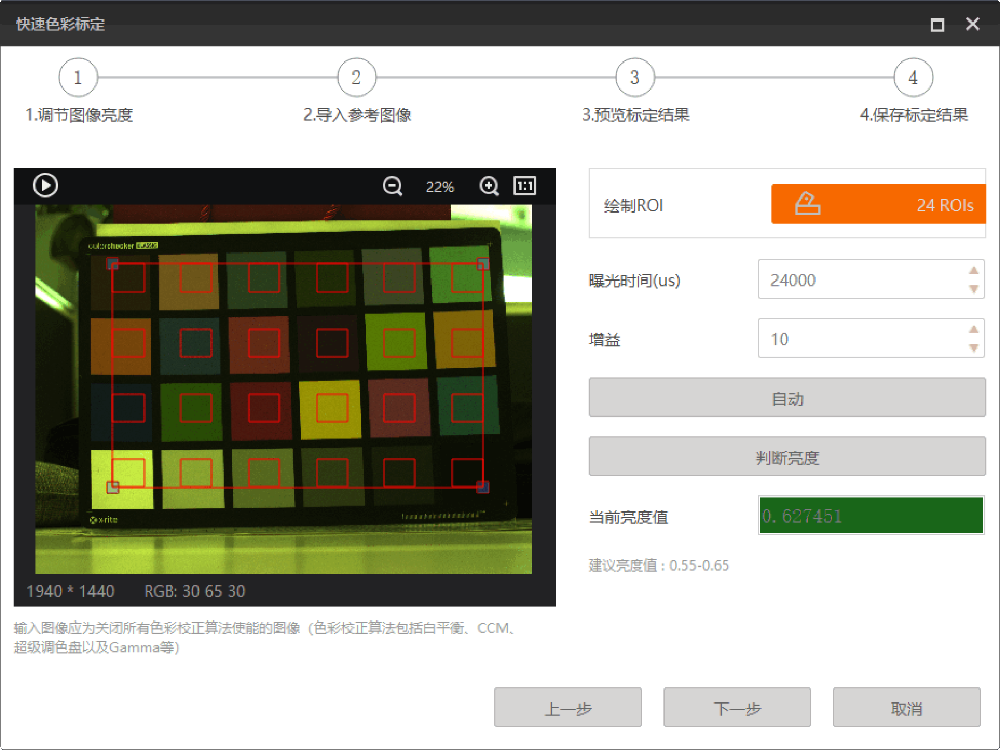
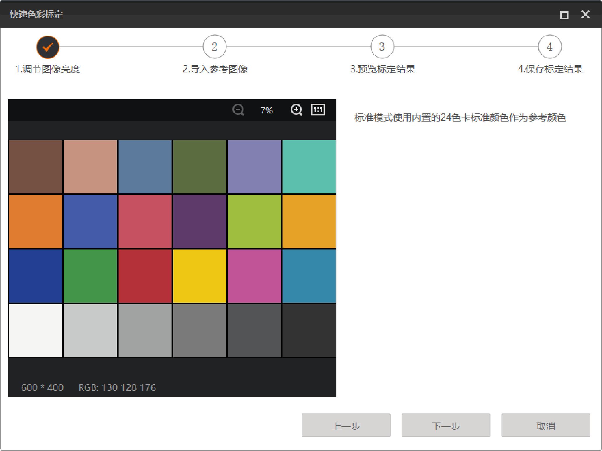
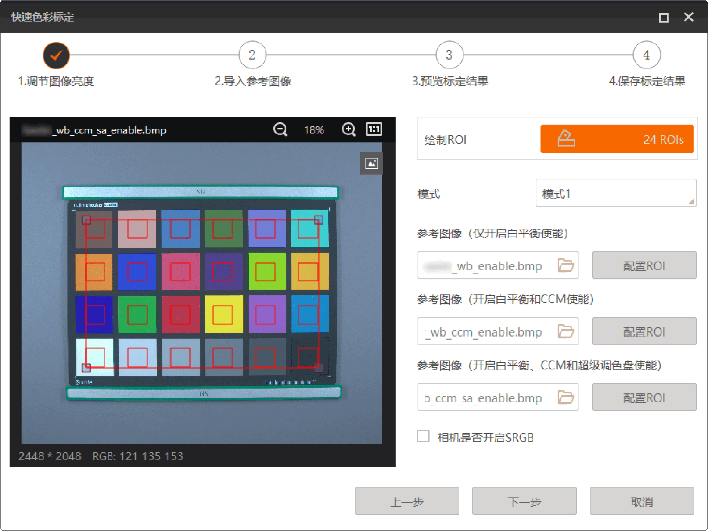
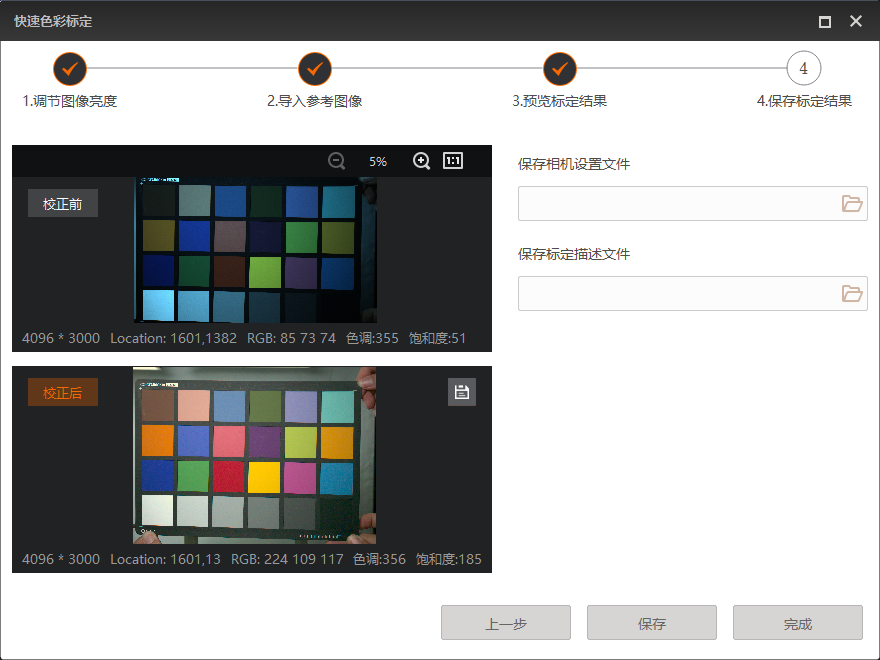

快速色彩标定
快速色彩标定工具支持实现任意照明条件下标准值以及参考相机色彩效果的相机色彩参数标定。
已通过进入快速色彩标定界面。
-
调节图像亮度。
-
获取图像。
-
当图像来源选择连接相机时，单击图像窗口左上角的进行采图，同时可设置相机曝光时间和增益，也可点击自动对曝光时间进行自动调节。
-
当图像来源选择本地图像时，单击导入图像源进行导入图像。
说明此处导入的图像应为关闭所有色彩校正算法使能的图像。导入图像后，也可点击
 进行替换图像。
进行替换图像。
-
-
单击绘制ROI右侧的
 并在左侧图像上绘制24色卡ROI。
并在左侧图像上绘制24色卡ROI。 -
单击判断亮度。
说明-
若当前亮度值显示绿色（在建议值范围内），可点击下一步。
-
若当前亮度值显示红色（超出建议值范围），则需重新调整曝光和增益值并重新采图，直至亮度符合建议值区间。
-

图 1 调节图像亮度（本地图像）
图 2 调节图像亮度（连接相机） -
-
导入参考图像。
色彩标定模式选择标准模式时，此步骤会自动导入图像源内置的24色卡标准颜色作为参考颜色，点击下一步即可。

图 3 导入参考图像（标准模式）色彩标定模式选择参考模式时，此步骤需针对不同模式导入对应色彩校正算法使能的参考图像。
-
选择模式，可选模式1、模式2、模式3。模式1需导入3张参考图像，模式2和模式3均需导入2张参考图像。每种模式对应的参考图像要求具体请见下表。
表 1 不同模式下的参考图像要求 模式
参考图像要求
模式1
参考图像1：仅开启白平衡使能
参考图像2：开启白平衡和CCM使能
参考图像3：开启白平衡、CCM和超级调色盘使能
模式2
参考图像1：开启白平衡和CCM使能
参考图像2：开启白平衡、CCM和超级调色盘使能
模式3
参考图像1：仅开启白平衡使能
参考图像2：开启白平衡、CCM和超级调色盘使能
-
单击参考图像右下方的并导入对应色彩校正算法使能的图像。
-
单击绘制ROI右侧的
并在左侧参考图像上绘制24色ROI。单击其余参考图像右侧的配置ROI可直接复用绘制的ROI。 -
设置相机是否开启SRGB。若图像在采集时开启SRGB，则需勾选此项，否则无需勾选。

图 4 导入参考图像（参考模式） -
-
保存标定结果。
-
单击校正后图像右上角的
 可保存校正后的图像。
可保存校正后的图像。 -
单击保存相机设置文件和保存标定描述文件右侧的并选择对应保存路径，点击保存即可。

图 6 保存标定结果说明-
在对应保存路径中可查看相机设置文件（ini 格式）和标定描述文件。其中，标定描述文件包含标定总结文件（xml格式）、原始输入图以及校正后的结果图。
-
点击完成将直接退出快速色彩标定，标定结果不会进行保存。
-